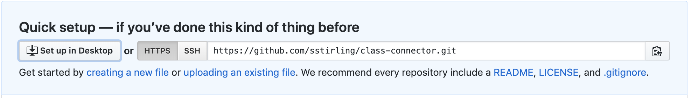

# Hello Git!
Note: This week's lesson will be considerably shorter as we'll spend part of the class reviewing CSS from last week.
<table width="50%">
<tr><td><img src="https://octodex.github.com/images/daftpunktocat-guy.gif" width="40%" height="300px" frameborder="1px"></td><td><img src="https://octodex.github.com/images/daftpunktocat-thomas.gif" width="40%" height="300px" frameborder="1px"></td></tr>
</table>
## Things you'll need for this class
1. A Github account
2. To download Github Desktop
If you don't have these things done, do it now.
## What is Github?
[Github](http://www.github.com) is a code-sharing platform that allows you to safely store and version control your code as well as share it with others. It is a social coding platform that enables easily collaboration as well.
### Why do we use Github?
Computers are fallable, but more importantly, you are too. Regularly saving your code to Github backs it up and allows you to easily go back to a previous version if you screw something up and lose your place. It happens. A lot.
### What is Github Pages?
It's a delightful service Github runs that allows you to publish a website using their platform. We'll be using it to publish all of our work this semester.
# Getting started with Git
First things first. Create a folder wherever you're going to store your code called "Github." We'll come back to it in a bit.
We'll need to do two things before we can really get into Github:
1. Authenticate Github to your account (essentially connect the two)
2. Configure it to work with your computer.
## Authentication.
[Follow this link](https://help.github.com/en/desktop/getting-started-with-github-desktop/authenticating-to-github) to go through the steps of authenticating.
## Configuring
[Follow this link](https://help.github.com/en/desktop/getting-started-with-github-desktop/configuring-git-for-github-desktop) to configure Git to your computer
**This are installation steps that you should not have to complete again.** <br>
<br>
<table>
<tr>
<td><img src="https://github.githubassets.com/images/modules/logos_page/GitHub-Mark.png" width="100%" height="25px" frameborder="1px"></td><td><img src="https://github.githubassets.com/images/modules/logos_page/GitHub-Mark.png" width="100%" height="25px" frameborder="1px"></td><td><img src="https://github.githubassets.com/images/modules/logos_page/GitHub-Mark.png" width="100%" height="25px" frameborder="1px"></td><td><img src="https://github.githubassets.com/images/modules/logos_page/GitHub-Mark.png" width="100%" height="25px" frameborder="1px"></td><td><img src="https://github.githubassets.com/images/modules/logos_page/GitHub-Mark.png" width="100%" height="25px" frameborder="1px"></td><td><img src="https://github.githubassets.com/images/modules/logos_page/GitHub-Mark.png" width="100%" height="25px" frameborder="1px"></td><td><img src="https://github.githubassets.com/images/modules/logos_page/GitHub-Mark.png" width="100%" height="25px" frameborder="1px"></td><td><img src="https://github.githubassets.com/images/modules/logos_page/GitHub-Mark.png" width="100%" height="25px" frameborder="1px"></td><td><img src="https://github.githubassets.com/images/modules/logos_page/GitHub-Mark.png" width="100%" height="25px" frameborder="1px"></td><td><img src="https://github.githubassets.com/images/modules/logos_page/GitHub-Mark.png" width="100%" height="25px" frameborder="1px"></td><td><img src="https://github.githubassets.com/images/modules/logos_page/GitHub-Mark.png" width="100%" height="25px" frameborder="1px"></td><td><img src="https://github.githubassets.com/images/modules/logos_page/GitHub-Mark.png" width="100%" height="25px" frameborder="1px"></td><td><img src="https://github.githubassets.com/images/modules/logos_page/GitHub-Mark.png" width="100%" height="25px" frameborder="1px"></td><td><img src="https://github.githubassets.com/images/modules/logos_page/GitHub-Mark.png" width="100%" height="25px" frameborder="1px"></td><td><img src="https://github.githubassets.com/images/modules/logos_page/GitHub-Mark.png" width="100%" height="25px" frameborder="1px"></td><td><img src="https://github.githubassets.com/images/modules/logos_page/GitHub-Mark.png" width="100%" height="25px" frameborder="1px"></td><td><img src="https://github.githubassets.com/images/modules/logos_page/GitHub-Mark.png" width="100%" height="25px" frameborder="1px"></td><td><img src="https://github.githubassets.com/images/modules/logos_page/GitHub-Mark.png" width="100%" height="25px" frameborder="1px"></td><td><img src="https://github.githubassets.com/images/modules/logos_page/GitHub-Mark.png" width="100%" height="25px" frameborder="1px"></td>
</tr>
</table>
<br>
## What is a respository?
[*Taken from this Github tutorial*](https://guides.github.com/activities/hello-world/#what)
A **repository** is usually used to organize a single project. Repositories can contain folders and files, images, videos, spreadsheets, and data sets – anything your project needs. We recommend including a README, or a file with information about your project. GitHub makes it easy to add one at the same time you create your new repository. It also offers other common options such as a license file.
We're going to create a repository called `Hello-Git`
### To create a new repository
** Go to your Github account. **
* In the upper right corner, next to your avatar or identicon, click and then select New repository.
* Name your repository `hello-git.`
* Write a short description.
* Select Initialize this repository with a README.

* **Click create repository.**
You should get a prompt like this:

* **Click Set up in Desktop**
You now have a repository you can edit on your desktop. Hooray!
Let's try making a change.
## Github terminology
Before we go any further, let's talk about some of the terminology you'll see using Github.
<img src="https://octodex.github.com/images/collabocats.jpg" width="30%" height="200px" frameborder="1px">
#### Commit
On GitHub, saved changes are called commits. They're generally accompanied by a message that explains what changes have been made.
#### Push
A push request is essentially Github's word for publish. When you initiate a push request, you're publishing the changes you've made locally to your Github repository on the web.
#### Pull
Pull Requests are the heart of collaboration on GitHub. When you open a pull request, you’re proposing your changes and requesting that someone review and pull in your contribution and merge them into their branch.
#### Readme
Generally contain instructions or notes about the project the user should know. Write them. Read them.
<br>
<Br>
<br>
### What is branching?
** We're not going to worry about this right now, but it's good to go over. **
**Branching** is the way to work on different versions of a repository at one time.
By default your repository has one branch named `master` which is considered to be the definitive branch. We use branches to experiment and make edits before committing them to `master`.
Have you ever saved different versions of a file? Something like:
* story.txt
* story-joe-edit.txt
* story-joe-edit-reviewed.txt
That's essentially what branching allows you to do, while keeping you organized and not immediately affecting your main product.
An example. This diagram shows:
* The `master` branch
* A new branch called `feature` (because we’re doing ‘feature work’ on this branch)
* The journey that `feature` takes before it’s merged into `master`

Branching isn't essential, but it's a great practice, especially if you're collaborating with someone on code. We'll be working on our own stuff that won't require much in the way of editing/big changes, so it's not something we're going to dwell on.
## Let's make a webpage!
So now we know enough to make and publish our first web page! We'll do this using Github Pages.
Start by going to Github and creating a new repository.
**This repository must be called `YourUserName.github.io`**
Here's mine:
<img src="assets/gpages.png">
When you get the prompt, click "set up in desktop"
Great. Now open up Sublime and create a new file.
To make things easy, just copy and paste this basic code into the file and save it as `index.html` in the folder that titled `YourUserName.github.io`
```
<!DOCTYPE html><html><head>
</head>
<body>
<h1>Hello World</h1>
<p>I'm hosted with GitHub Pages.</p>
</body>
</html>
```
Now save it and go back to your Github Desktop. You should see the index file now in your repository.
Write a description/summary of what you did ("First commit" is the most common starter.)
Press commit to master, then publish.

### With that, you should have just published a website!!!
<img src="https://cultofthepartyparrot.com/parrots/hd/parrot.gif"frameborder="1px" width="30%">
<br>
## Lab Time: Edit your index file and publish a website
Create a basic webpage about something. Could be about you, or whatever you want.
Your site should include these elements:
* An image or gif
* At least two CSS styling elements
* At least one paragraph of text
* A headline
* A list (ordered or unordered)
Publish to Github Pages.